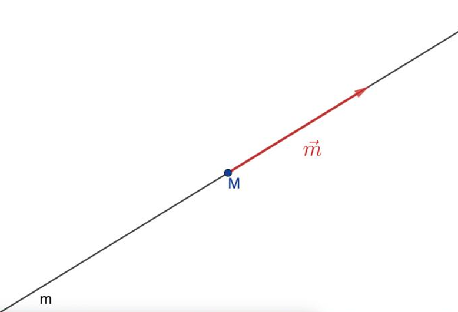
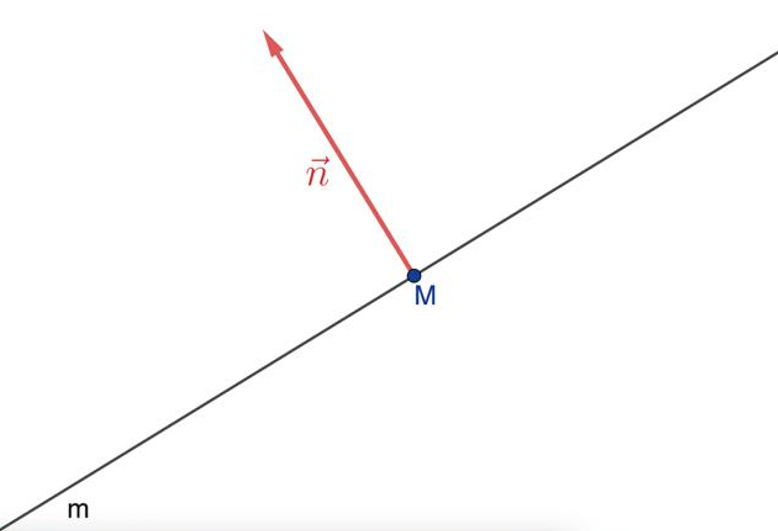
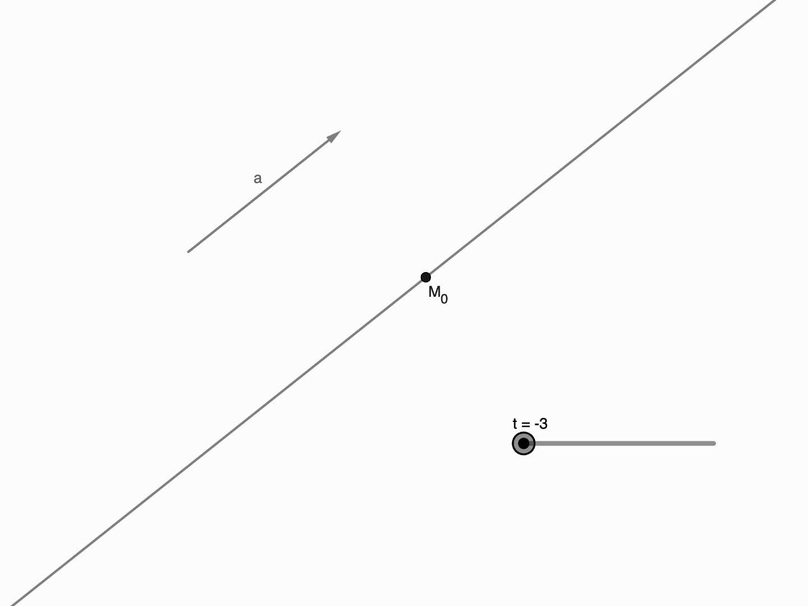

ЛРММ «Арт-объект»
«Поиск неизвестного объекта на местности по азимутам от двух точек с определёнными географическими координатами»
Дано
Две точки — A и B — с известными координатами. Из каждой из них измерен азимут: направление на некоторый третий, пока неизвестный объект C.
Нужно найти
Координаты точки C — того самого объекта, на который указывают оба азимута.
Вывод математической модели
Построим математическую модель ЛРМ. Пусть даны две точки \(A(x_A,\ y_A)\)
и \(B(x_B,\ y_B)\), для этих точек даны азимуты \(\alpha\) и \(\beta\) до
некой точки \(C(x,\ y)\). Задача состоит в нахождении координат точки
C на основе имеющихся данных.
Примечание: Азимут определяется как угол между направлением на север и направлением на любой
объект по ходу часовой стрелки.
Не знакомы с параметрическим уравнением прямой? Коротко объясним
Как задать прямую на плоскости
Прямую можно задать по-разному — например, точкой на ней и вектором, указывающим её направление (направляющий вектор), либо точкой и вектором, перпендикулярным прямой (нормальный вектор). В нашей модели удобнее первый способ: одна точка (A или B) и направление на объект C, заданное азимутом.


Параметрическое уравнение прямой
Пусть прямая \(m = (M_0,\ \vec{a})\), где \(M_0(x_0,\ y_0)\) и \(\vec{a} = (a_1,\ a_2)\) — некие точка и вектор. Тогда произвольная точка \(M(x,\ y)\) лежит на прямой \(m\) тогда и только тогда, когда \(\overrightarrow{MM_0} = t \cdot \vec{a}\). То есть при:
$$\overrightarrow{MM_0} = (x - x_0,\ y - y_0)$$
Имеем:
$$\overrightarrow{MM_0} = t\cdot\vec{a} \iff \left\{\begin{array}{l} x - x_0 = t\cdot a_1 \\ y - y_0 = t \cdot a_2\end{array}\right. \iff m:\left\{\begin{array}{l}x = x_0 + t\cdot a_1\\ y = y_0 + t \cdot a_2\end{array}\right.$$
Меняя \(t\), мы "пробегаем" всю прямую: разным значениям \(t\) соответствуют разные точки на ней. Именно эту идею мы и используем ниже — только направляющим вектором служит направление по азимуту.

Доказательство:
Рассмотрим точку A. Координаты направляющего вектора луча
AC есть \(\vec{u_A} = (\sin\alpha,\ \cos\alpha)\), а параметрическое
уравнение прямой a, проходящей через A с направляющим
вектором \(\vec{u_A}\), имеет следующий вид:
$$a:\ \left\{\begin{array}{l} x = x_A + t_A \cdot \sin\alpha \\ y = y_A + t_A \cdot \cos\alpha, \end{array}\right.$$
где \(t_A\) — параметр, \(t_A > 0\) для точки C (так как C лежит на луче AC). Аналогично для точки B: \(\vec{u_B} = (\sin\beta,\ \cos\beta)\),
$$b:\ \left\{\begin{array}{l} x = x_B + t_B \cdot \sin\beta \\ y = y_B + t_B \cdot \cos\beta, \end{array}\right.$$
где \(t_B\) — параметр, \(t_B > 0\) для точки C (так как C лежит на луче BC).
Точка C лежит на лучах AC и BC, тогда её координаты соответствуют уравнениям:
$$\left\{\begin{array}{l} x_A + t_A \cdot \sin\alpha = x_B + t_B \cdot \sin\beta \\ y_A + t_A \cdot \cos\alpha = y_B + t_B \cdot \cos\beta. \end{array}\right.$$
Выразим \(t_B\) из первого уравнения:
$$t_B = \frac{x_A - x_B + t_A \cdot \sin\alpha}{\sin\beta},$$
и подставим \(t_B\) во второе уравнение:
$$y_A + t_A \cdot \cos\alpha = y_B + \frac{x_A - x_B + t_A \cdot \sin\alpha}{\sin\beta} \cdot \cos\beta.$$
Преобразуем выражение, выразим \(t_A\):
$$\left( y_A + t_A \cdot \cos\alpha \right)\sin\beta = y_B \cdot \sin\beta + \left( x_A - x_B + t_A \cdot \sin\alpha \right) \cdot \cos\beta$$
$$t_A \cdot \cos\alpha \cdot \sin\beta - t_A \cdot \sin\alpha \cdot \cos\beta = y_B \cdot \sin\beta - y_A \cdot \sin\beta - \left( x_A - x_B \right)\cos\beta$$
$$t_A = \frac{y_B \cdot \sin\beta - y_A \cdot \sin\beta + \left( x_A - x_B \right)\cos\beta}{\cos\alpha \cdot \sin\beta - \sin\alpha \cdot \cos\beta}$$
$$t_A = \frac{\left( y_B - y_A \right)\sin\beta + \left( x_A - x_B \right)\cos\beta}{\sin(\beta - \alpha)}.$$
Тогда координаты точки C имеют вид:
$$C:\ \left\{\begin{array}{l} x = x_A + \dfrac{\left( x_A - x_B \right)\cos\beta + \left( y_B - y_A \right)\sin\beta}{\sin(\beta - \alpha)} \cdot \sin\alpha \\[10pt] y = y_A + \dfrac{\left( x_A - x_B \right)\cos\beta + \left( y_B - y_A \right)\sin\beta}{\sin(\beta - \alpha)} \cdot \cos\alpha. \end{array}\right.$$
Случай, когда \(\sin(\beta - \alpha) = 0\) (при \(\alpha = \beta\)) тривиален. Здесь т. C либо не существует (лучи параллельны и не пересекаются), либо C определена неоднозначно (лучи совпадают).
Что и требовалось доказать.
Калькулятор
Тот же расчёт — введите данные и получите координаты точки C.